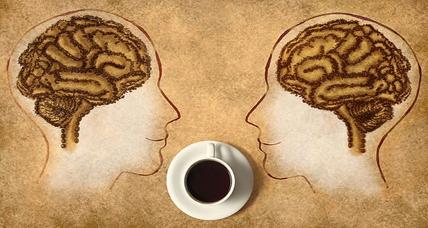
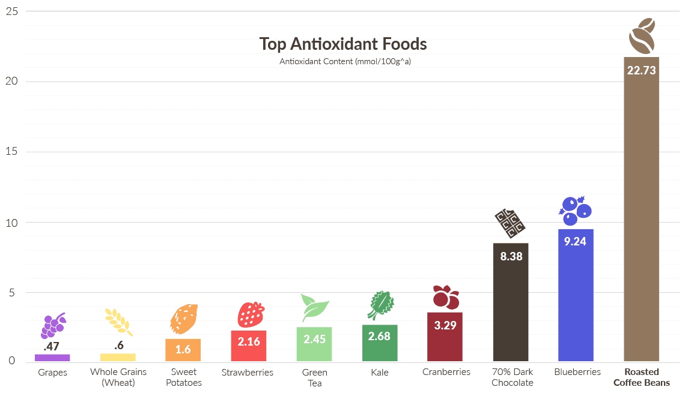

-
Can Improve Energy Levels and Reaction Times.
Coffee can help people feel less tired and increase energy levels.
That’s because it contains a stimulant called caffeine — the most
commonly consumed psychoactive substance in the world. After you
drink coffee, the caffeine is absorbed into your bloodstream. From
there, it travels to your brain. In the brain, caffeine blocks the
inhibitory neurotransmitter adenosine. When this happens, the amount
of other neurotransmitters like norepinephrine and dopamine
increases, leading to enhanced firing of neurons.
- Can Help You Burn Fat
Caffeine is found in almost every commercial fat-burning supplement
— and for good reason. It’s one of the few natural substances proven
to aid fat burning. Several studies show that caffeine can boost
your metabolic rate by 3–11%.
- Can Drastically Improve Physical Performance
Caffeine stimulates your nervous system, signaling fat cells to
break down body fat. But it also increases epinephrine (adrenaline)
levels in your blood. This is the fight-or-flight hormone, which
prepares your body for intense physical exertion. Caffeine breaks
down body fat, making free fatty acids available as fuel. Given
these effects, it’s unsurprising that caffeine can improve physical
performance by 11–12%, on average.
- Contains Essential Nutrients
Many of the nutrients in coffee beans make their way into the
finished brewed coffee. A single cup of coffee contains:
-
Riboflavin (vitamin B2): 11% of the Reference Daily Intake
(RDI).
- Pantothenic acid (vitamin B5): 6% of the RDI.
- Manganese and potassium: 3% of the RDI.
- Magnesium and niacin (vitamin B3): 2% of the RDI.
- May Lower Your Risk of Type 2 Diabetes
Type 2 diabetes is a major health problem, currently affecting
millions of people worldwide. It’s characterized by elevated blood
sugar levels caused by insulin resistance or a reduced ability to
secrete insulin. For some reason, coffee drinkers have a
significantly reduced risk of type 2 diabetes.
-
May Protect You From Alzheimer’s Disease and Dementia

Alzheimer’s disease is the most common neurodegenerative disease and
the leading cause of dementia worldwide. This condition usually
affects people over 65, and there is no known cure. However, there
are several things you can do to prevent the disease from occurring
in the first place. This includes the usual suspects like eating
healthy and exercising, but drinking coffee may be incredibly
effective as well.
- May Lower Your Risk of Parkinson’s
Parkinson’s disease is the second most common neurodegenerative
condition, right behind Alzheimer’s. It’s caused by the death of
dopamine-generating neurons in your brain. As with Alzheimer’s,
there is no known cure, which makes it that much more important to
focus on prevention. Studies show that coffee drinkers have a much
lower risk of Parkinson’s disease, with a risk reduction ranging
from 32–60% .
- May Protect Your Liver
Your liver is an amazing organ that carries out hundreds of
important functions. Several common diseases primarily affect the
liver, including hepatitis, fatty liver disease and many others.
Many of these conditions can lead to cirrhosis, in which your liver
is largely replaced by scar tissue. Interestingly, coffee may
protect against cirrhosis — people who drink 4 or more cups per day
have up to an 80% lower risk.
- Can Fight Depression
Depression is a serious mental disorder that causes a significantly
reduced quality of life. It’s very common, as about 4.1% of people
in the US currently meet the criteria for clinical depression. In a
Harvard study published in 2011, women who drank 4 or more cups of
coffee per day had a 20% lower risk of becoming depressed.
- May Lower Risk of Certain Types of Cancer
Cancer is one of the world’s leading causes of death. It is
characterized by uncontrolled cell growth in your body. Coffee
appears to be protective against two types of cancer: liver and
colorectal cancer
-
Doesn’t Cause Heart Disease and May Lower Stroke Risk
It’s often claimed that caffeine can increase your blood pressure.
This is true, but with a rise of only 3–4 mm/Hg, the effect is small
and usually dissipates if you drink coffee regularly. Some studies
also show that coffee drinkers have a 20% lower risk of stroke.
- May Help You Live Longer
Given that coffee drinkers are less likely to get many diseases, it
makes sense that coffee could help you live longer. Several
observational studies indicate that coffee drinkers have a lower
risk of death.
-
The Biggest Source of Antioxidants in the Western Diet

For people who eat a standard Western diet, coffee may be one of the
healthiest aspects of their diet. That’s because coffee is quite
high in antioxidants. Studies show that many people get more
antioxidants from coffee than from fruits and vegetables combined.